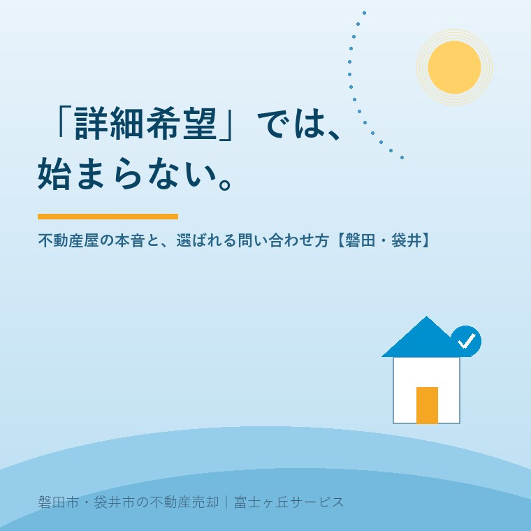

2026年8月2日｜カテゴリ：購入の実務・不動産屋の本音

この記事の要点
Q. 気になる物件を見つけた。まず「資料請求」や「詳細を知りたい」で問い合わせればいい？
A. 実は、物件広告としてWEBに掲載されている情報が基本的にすべてで、「詳細希望」に対してお渡しできる追加の資料はほとんどありません。掲載情報をひととおり読んだうえで、「ここが知りたい」という個別具体的な質問をするのが、話を一番早く進めるコツです。具体的に聞く人は、不動産会社からも売主からも「本気の買主候補」として大切に扱われます。磐田市・袋井市の物件のご質問なら、富士ヶ丘サービスのような地域密着の会社に具体的にぶつけてみてください。
今日は、ふだんあまり表で語られない「不動産屋の本音」を正直に書きます。ポータルサイトや不動産会社のホームページには、「物件の詳細を知りたい」「資料請求」というボタンがあります。何気なく押している方が多いと思いますし、押した方が悪いわけではまったくありません。ただ、受け取る側の私たちは、この問い合わせにいつも困っています。なぜなら──お見せしている情報が、基本的にすべてだからです。
「詳細を知りたい」と言われたとき、実は不動産会社の手元に、WEBに出していない詳しいパンフレットが眠っているわけではありません。価格、所在地、面積、間取り、築年、接道、法令制限、取引態様──物件広告に載せるべき情報は、不動産の表示に関する公正競争規約などのルールで決まっており、誠実な会社ほど、出せる情報は最初から全部出しています。隠して問い合わせを釣る時代ではありませんし、隠す動機もありません。
だから「詳細希望」とだけ言われると、私たちは掲載済みの情報をそのまま送り返すことしかできず、お客様には「なんだ、知っていることばかりだ」とがっかりされる。誰も得をしないやり取りが生まれてしまうのです。
一方で、こういう問い合わせをいただくと、私たちは俄然張り切ります。
これらは、WEBの情報を読んだ人にしか出てこない質問です。質問が具体的だと、答えも具体的にできます。広告に書ききれない現地の肌感覚、売主に確認しないと分からないこと、この物件の弱点も含めて、正直にお答えできる。質問の具体性は、私たちが誠実に働ける余地の広さなのです。
これは業界の現実の話です。人気の物件には問い合わせが複数入ります。そのとき、売主と不動産会社が真剣に向き合うのは、「何となく詳細希望」の人ではなく、目的が見える人です。具体的な質問をする人は、①掲載情報を読み込んでいる、②検討の段階が進んでいる、③話がまとまる可能性が高い──と判断され、内覧の調整も、価格や引き渡し条件の相談も、優先的に、丁寧に進みます。
つまり、具体的に聞くことは、不動産屋のためではなく、あなた自身が「選ばれる買主」になるための技術です。逆に、目的の見えない資料請求を繰り返しても、残念ながら商談の列の前には進めません。
| ステップ | やること |
|---|---|
| ①掲載情報を全部読む | 価格・面積・築年・接道・法令制限・取引態様まで。図面と写真も隅々まで。「書いてあることを聞かない」が第一歩 |
| ②自分で調べられることを調べる | ハザードマップ、周辺環境、周辺の地価水準。現地を外から見に行くのも自由です |
| ③「目的＋具体的な質問」で問い合わせる | 「自宅として検討中。○○が知りたい」「内覧したい」。目的が1行あるだけで、対応の質が変わります |
質問は立派でなくて構いません。「子どもの通学路が心配」「親を呼び寄せたいので段差が気になる」──暮らしの言葉の質問こそ、私たちが一番答えたい質問です。
富士ヶ丘サービスは、磐田市・袋井市の物件について、個別具体的なご質問を歓迎します。「この物件のここが気になる」「この地区の水はけは？」「この価格は交渉できる？」──答えにくい質問ほど、正直にお答えするのが当社の流儀です（査定の記事で書いたとおり、耳の痛いことも含めて）。逆に、目的をまだ言葉にできない段階の方は、物件の資料請求よりも20の無料診断や実家じまい相談室から始めていただくほうが、ずっと実りがあります。段階に合った入口を選んでいただくことが、お互いの時間を大切にする一番の方法です。
不動産の取引は、結局のところ人と人との話し合いです。いい質問は、いい取引の始まり。磐田市・袋井市の不動産のこと、どうぞ具体的にお尋ねください。全力でお答えします。
磐田市・袋井市の物件のご質問｜個別具体的なご質問、歓迎します
「この物件のここが知りたい」を、そのままお送りください。
売却をお考えの方はふじがおか実家カルテ、検討がまだ言葉にならない方は20の無料診断からどうぞ。
本記事は2026年8月2日時点の情報と、当社の営業経験に基づく見解をまとめたものです。問い合わせの受け止め方は会社により異なります。本記事は特定の方・特定の事業者を批判する意図はありません。
磐田市・袋井市の実家じまい・相続空き家相談
固定資産税通知書だけでも相談できます
住所があいまいでも、通知書や写真から名義・道路・農地・残置物の確認順を整理します。カルテ申込またはLINEで状況を送ってください。
富士ヶ丘サービス株式会社／静岡県磐田市見付5789番地1／TEL:0538-31-3308／静岡県知事 (2) 第14083号／代表取締役・宅地建物取引士 大石 浩之